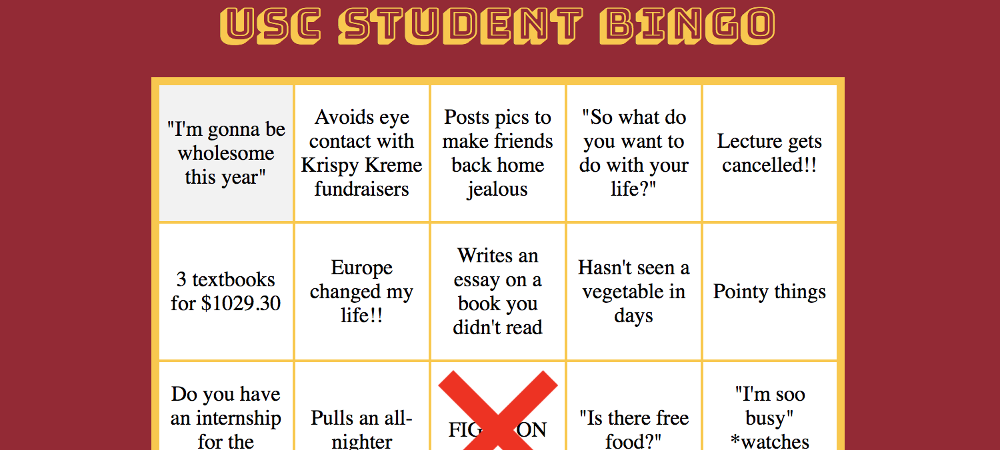
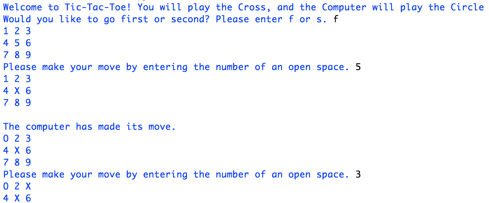
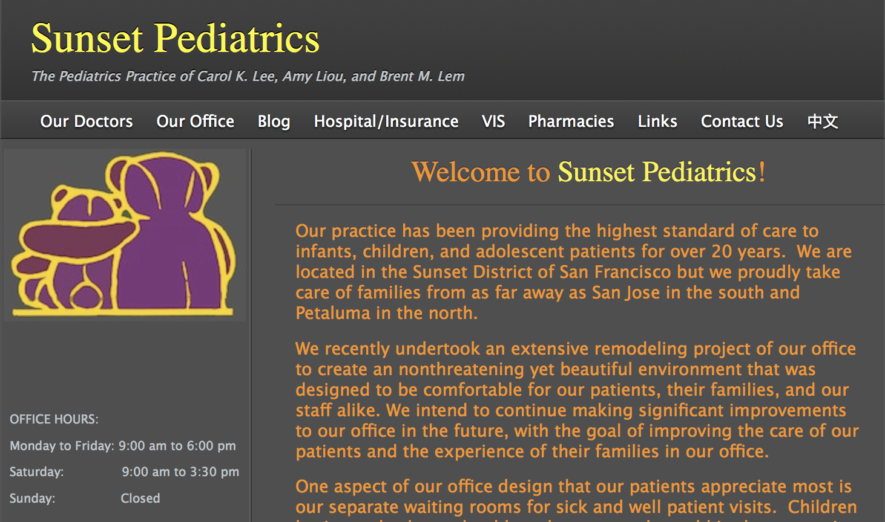

As a student of Computer Science, over the years I have participated and completed a number of projects, both in and out of the classroom. I am most proud of completing USC Bingo at TrojanHacks Strikes Back 2017, as I was the de-facto leader of the group (all the other members were below me in the CS course progression).
-

USC Bingo
A Bingo game based on University of Southern California memes. Much of the content of the bingo boards was derived off the Facebook meme page for USC. The content of the bingo board is randomized with each playthrough, so that no two players have exactly the same experience. Can be accessed at this link.
-

Tic-Tac-Toe
As a final assignment in a heuristics Freshman Seminar at New York University I along with a partner coded a simple Tic-Tac-Toe game to be played against the computer. The computer always makes one of the optimal choices in every situation, so it is impossible for a human to defeat it.
-

Sunset Pediatrics SF
I helped to create the website for this pediatric practice a long time ago, in my early years of high school. I used SandVox, similar to other "What you see is what you get" website creators out there. Can be accessed at this link.
Click
here to return to the homepage